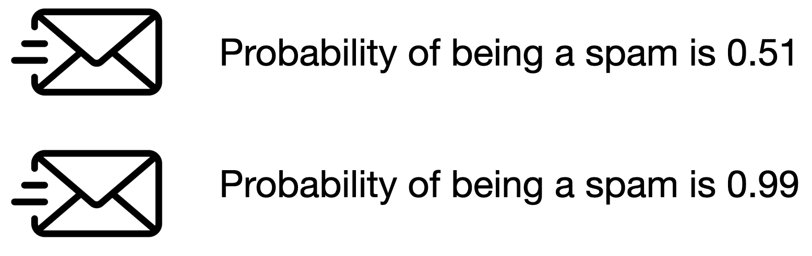
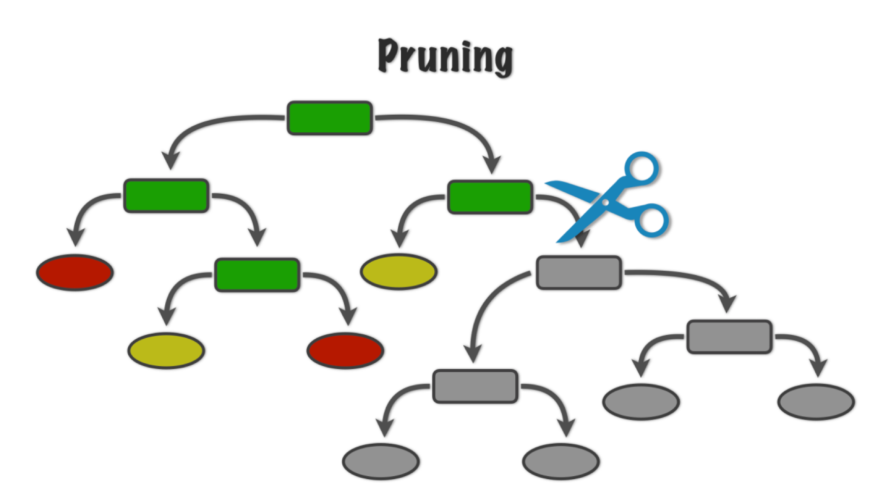

Before we start, let’s import the data science libraries into Python.
# Importing necessary librariesimport pandas as pdimport matplotlib.pyplot as pltimport seaborn as snsimport statsmodels.api as smfrom sklearn.model_selection import train_test_splitfrom sklearn.metrics import confusion_matrix, ConfusionMatrixDisplay, accuracy_score
Here, we will introduce the functions confusion_matrix(), ConfusionMatrixDisplay() and accuracy_score() to evaluate the performance of a logistic regression classifier.
Problemas principales de cienca de datos
Problemas de regresión. La respuesta es numérica. Por ejemplo, los ingresos de una persona, el valor de una casa, la presión arterial del paciente.
Problemas de clasificación. La respuesta es categórica e involucra K categorías diferentes. Por ejemplo, la marca de un producto adquirido (A, B, C) o si una persona incumple una deuda (sí o no).
Los predictores pueden ser numéricos o categóricos.
Respuesta:
\(Y\) es una variable categórica que toma 2 categorías o clases.
Por ejemplo, \(Y\) puede tomar 0 o 1, A o B, no o sí, spam o no spam.
Cuando las clases son cadenas, se suele codificarlas como 0 y 1.
La clase de destino es aquella para la que \(Y = 1\). La clase de referencia es aquella para la que \(Y = 0\).
Algoritmos de Clasificación
Los algoritmos de clasificación usan los valores de los predictores para predecir la clase de la respuesta (objetivo o referencia).
Es decir, para un registro no visto, usan los valores de los predictores para predecir si el registro pertenece a la clase objetivo o no.
Técnicamente, predicen la probabilidad de que el registro pertenece a la clase objetivo.
Ejemplo 1
Considere un filtro de correo no deseado donde \(Y\) es el tipo de correo.
La clase de destino es spam. En este caso, \(Y=1\).
La clase de referencia no es spam. En este caso, \(Y=0\).

Ambos correos se clasificarían como spam. Sin embargo, tendríamos mayor confianza en nuestra clasificación para el segundo correo.
Classification and Regression Trees (CART)
Arbol de Decisión
Es un algoritmo de aprendizaje supervisado que predice o clasifica observaciones usando una estructura de arbol jerarquica.
Sencillo y útil para interpretaciones.
Puede manejar predictores y respuestas numéricas y categóricas.
Computacionalmente eficiente.
Técnica no paramétrica.
Ejemplo 2: Identificar Billetes Falsos
Conjunto de datos
Los datos se encuentran en el archivo “banknotes.xlsx”.
bank_data = pd.read_excel("banknotes.xlsx")# Set response variable as categorical.bank_data['Status'] = pd.Categorical(bank_data['Status'])bank_data.head()
Status
Left
Right
Bottom
Top
0
genuine
131.0
131.1
9.0
9.7
1
genuine
129.7
129.7
8.1
9.5
2
genuine
129.7
129.7
8.7
9.6
3
genuine
129.7
129.6
7.5
10.4
4
genuine
129.6
129.7
10.4
7.7
Generar datos de entrenamiento
Dividimos el conjunto de datos actual en dos conjuntos de datos: de entrenamiento y de validación. Para ello, utilizamos la función train_test_split() de scikit-learn.
# Set full matrix of predictors.X_full = bank_data.drop(columns = ['Status'])# Set full matrix of responses.Y_full = bank_data['Status']# Split the dataset.X_train, X_val, Y_train, Y_val = train_test_split(X_full, Y_full, test_size=0.3)
El parámetro test_size establece la parte del conjunto de datos que irá al conjunto de validación.
La función realiza una partición inteligente de los datos utilizando la distribución empírica de la respuesta.
Técnicamente, divide los datos para que la distribución de la respuesta en los conjuntos de entrenamiento y validación sea similar.
Normalmente, la proporción del conjunto de datos que se destina al conjunto de prueba es del 20 % o 30 %.
Más adelante, utilizaremos el conjunto de datos de validación para evaluar el rendimiento de clasificación del modelo de regresión logística estimado para clasificar datos no observados.
Idea básica de un árbol de decisión
Estratificar o segmentar el espacio predictor en varias regiones más simples.
¿Cómo se construye un árbol de decisión?
La construcción de árboles de decisión implica dos procedimientos principales.
Crece un árbol grande.
Poda el árbol para evitar un ajuste excesivo.
Después de construir un “buen” árbol, podemos predecir nuevas observaciones que no se encuentran en el conjunto de datos que usamos para construirlo.
¿Cómo crecemos un arbol?
Usando el algoritmo CART!
El algoritmo utiliza una estrategia de división binaria recursiva que construye el árbol utilizando un enfoque codicioso de arriba hacia abajo.
Básicamente, en un nodo determinado, considera todas las variables y todas las posibles divisiones de esa variable. Luego, para la clasificación, elige la mejor variable y la divide que minimiza la llamada impureza.
Repetimos el proceso de partición hasta que los nodos terminales tengan no menos de 5 observaciones
¿Qué es impureza?
La impureza del nodo se refiere a la homogeneidad de las clases de respuesta en ese nodo.
El algorítmo CART minimiza la impureza entre los nodos del arbol.
¿Cómo medimos la impureza?
Hay tres métricas diferentes para la impureza:
Riesgo de clasificación errónea
Entropía cruzada
Índice de impurezas de Gini
Proportion of elements in a class
Podando el Arbol
Para evitar un ajuste excesivo, podamos algunas de las ramas del árbol. Más específicamente, colapsamos dos nodos internos (no terminales).

Para podar un arbol usamos un algoritmo avanzado para medir la contribucón de las ramas del arbol.
El algoritmo tiene un parametro de ajuste llamado \(\alpha\), que pone mayor peso en el numero de nodos del arbol (o tamaño):
Valores grandes de \(\alpha\) resultan en arboles pequeños con pocos nodos.
Valores pequeños de \(\alpha\) resultan en arboles grandes con muchos nodos.
Detalles de implementación
Predictores categóricos con niveles desordenados \(\{A, B, C\}\). Ordenamos los niveles de una manera específica (funciona para problemas binarios y de regresión).
Predictores con valores faltantes. Para predictores cuantitativos, usamos imputación múltiple. Para predictores categóricos, creamos un nuevo nivel “NA”.
Divisiones terciarias o cuartarias. No hay mucha mejora.
Divisiones en diagonal (usando una combinación lineal para la partición). Pueden conducir a una mejora, pero perjudican la interpretabilidad.
Ejemplo en Python
Los datos “AdultReduced.jmp” provienen del Repositorio de Aprendizaje Automático de la UCI y se derivan de registros del censo de USA.
En estos datos, el objetivo es predecir si los ingresos de una persona eran grandes (definidos en 1994 como más de 50.000 dólares) o pequeños.
Los predictores incluyen nivel educativo, tipo de trabajo (por ejemplo, nunca trabajó y gobierno local), ganancias/pérdidas de capital, horas de trabajo por semana, país de origen, etc.
Los datos tienen 7,508 registros.
Desventaja de los Arboles de Decisión
Los árboles de decisión tienen una gran variación. Un pequeño cambio en los datos de entrenamiento puede dar lugar a un árbol muy diferente.
Tiene problemas para identificar estructuras de datos simples.
Métricas de Algoritmos de Clasificación
Evaluación
Evaluamos un clasificador de regresión logística clasificando las observaciones que no se utilizaron para el entrenamiento ni para su estimación.
Es decir, utilizamos el clasificador para predecir las categorías del conjunto de datos de prueba utilizando únicamente los valores predictores de este conjunto.
En Python, usamos los comandos:
# Remove problematic predictor from the test set.#X_val = X_val.drop(columns = ['Right'])# Add constant to the predictor matrix from the test set.#X_val = sm.add_constant(X_val)# Predict probabilities.#predicted_probability = logit_model.predict(X_val)
La función predict() genera probabilidades en lugar de las clases reales.
#predicted_probability.head()
Estas son las probabilidades de que un billete sea “falso” según sus características (valores de los predictores).
Para convertir las probabilidades en clases reales, las redondeamos:
Las observaciones con probabilidades superiores a 0,5 se clasifican como “falsas”.
Las observaciones con probabilidades inferiores a 0,5 se clasifican como “genuinas”.
Ahora, comparamos las predicciones con las categorías reales en el conjunto de datos de validación. Un buen modelo de regresión logística presenta una buena concordancia entre sus predicciones y las categorías reales.
Matriz de confusión
Tabla utilizada para evaluar el rendimiento de un clasificador.
Compara los valores reales con los valores predichos de un clasificador.
Útil para problemas de clasificación binaria y multiclase.
En Python
Calculamos la matriz de confusión utilizando la función homónima scikit-learn.
# Create dummy variables for test set.#Y_dummies = pd.get_dummies(Y_val, dtype = 'int')# Select target variable from test set.#Y_target_test = Y_dummies['counterfeit']# Compute confusion matrix.#cm = confusion_matrix(Y_target_test, predicted_classes)# Show confusion matrix.#print(cm)
Podemos visualizar la matriz de confusión utilizando la función ConfusionMatrixDisplay().
#ConfusionMatrixDisplay(cm).plot()
Precisión
Una métrica simple para resumir la información de la matriz de confusión es la precisión. Es la proporción de clasificaciones correctas para ambas clases, del total de clasificaciones realizadas.
En Python, calculamos la precisión mediante la función accuracy_score() de scikit-learn.
Cuanto mayor sea la precisión, mejor será el rendimiento del clasificador.
Observaciones
La precisión es fácil de calcular e interpretar.
Funciona bien cuando el conjunto de datos tiene una distribución de clases equilibrada (es decir, casos 1 y 0 aproximadamente iguales).
Sin embargo, hay situaciones en las que identificar la clase objetivo es más importante que la clase de referencia.
Por ejemplo, no es ideal para conjuntos de datos desequilibrados. Cuando una clase es mucho más frecuente que la otra, la precisión puede ser engañosa.
Un ejemplo
Digamos que deseamos crear un clasificador que nos diga si un cliente de una empresa de telefonía móvil abandonará el próximo mes.
Los clientes que abandonan disminuyen significativamente los ingresos de la empresa. Por eso es importante conservar a estos clientes.
Para retener a ese cliente, la empresa le enviará un mensaje de texto con una oferta para un plan móvil de bajo costo.
Idealmente, nuestro clasificador identifica correctamente a los clientes que abandonarán, para que obtengan la oferta y, con suerte, se queden.
En otras palabras, queremos evitar tomar decisiones equivocadas sobre clientes que abandonarán.
Las decisiones equivocadas sobre los clientes leales no son tan relevantes.
Porque si clasificamos a un cliente leal como uno que abandonará, el cliente obtendrá una buena oferta. Probablemente pagará menos pero se quedará de todos modos.
Otro ejemplo
Otro ejemplo es desarrollar un algoritmo (clasificador) que pueda identificar rápidamente a pacientes que puedan tener una enfermedad rara y necesiten una evaluación médica más exhaustiva y costosa.
El clasificador debe tomar decisiones correctas sobre los pacientes con la enfermedad rara, para que sean evaluados y eventualmente tratados.
Un paciente sano al que se clasifica erróneamente con la enfermedad sólo incurrirá en algunos dólares extra para pagar el siguiente estudio. Sólo para descubrir que el paciente no tiene la enfermedad.
Métricas especificas de clasificación
Para superar esta limitación de exactitud y tasa de error, existen varias métricas específicas de clase. Los más populares son:
Sensibilidad o recall
Presición
Error tipo I
Estas métricas se calculan de la matriz de confusión.
Sensibilidad o recall = OO/(OO + OR) “¿Cuántos registros de la clase objetivo predijimos correctamente?”
Presición = OO/(OO + RO) ¿Cuántos de los registros que predijimos como de clase objetivo fueron clasificados correctamente?
Error tipo I = RO/(RO + RR) “¿Cuántos de los registros de referencia predijimos incorrectamente como de objetivo?”
Discusión
Generalmente existe un compromiso entre sensibilidad y error de tipo I.
Intuitivamente, aumentar la sensibilidad de un clasificador probablemente genere un aumento del error tipo I, porque se predicen más observaciones como positivas.
Las posibles compensaciones entre sensibilidad y error de tipo I pueden ser apropiadas cuando existen diferentes sanciones o costos asociados con cada tipo de error.
Ejemplo
Asumiendo que la clase de interés o objetivo es “large”
Sensibilidad = 566/(566 + 214) = 0.726
Precisión = 566/(566 + 156) = 0.783
Error Tipo 1 = 156/(156+655) = 0.192
Actividad 2.1: Clasificación y métricas (cooperative mode)
Juntate con un compañero.
Utilizando los datos de la tabla “weight-height.csv” aplica el procedimiento CART para construir un árbol de decisión útil para predecir el sexo de una persona a partir de su peso y su estatura.
En este ejemplo las variables predictoras son continuas y la variable a predecir es binaria.
Interpreta los valores de Precision, Exactitud, Sensibilidad y Error Tipo 1 para el conjunto de validación. Si el software no los reporta haz los cálculos a partir de la matriz de confusión. Utiliza “Female” como clase objetivo.
Discute sobre la efectividad del modelo resultante.
K vecinos cercanos
Es un algoritmo de aprendizaje supervisado que usa la proximidad para hacer clasificaciones o predicciones sobre la agrupación de un punto de datos individual.
Idea básica: predecir una nueva observación utilizando las K observaciones más cercanas en el conjunto de datos de entrenamiento.
Para predecir la respuesta de una nueva observación, K-NN utiliza los K vecinos (observaciones) más cercanos en terminos de los predictores!
La respuesta prevista para la nueva observación es la respuesta más común de los K vecinos.
El algoritmo tiene 3 pasos
Elige el numero de vecinos más cercanos (K).
Para una observación nueva, encuentra las K observaciones más cercanas en los datos de entrenamiento (ignorando la respuesta).
Para la observación nueva, el algoritmo predice el valor de la respuesta mas común entre las K observaciones más cercanas.
Supongamos que tenemos dos grupos: el grupo rojo y el grupo verde. La recta numérica muestra el valor de una variable para nuestros datos de entrenamiento.
Llega una nueva observación y no sabemos a qué grupo pertenece.
Si hubiéramos elegido K=3, entonces los tres vecinos más cercanos votarían a qué grupo pertenece la nueva observación.
Usando \(K = 3\), son 2 votos para “genuino” y 2 para “falso”. Entonces clasificamos como “geniunio”.
La cercanía se basa en la distancia Euclidiana.
Detalles de implementación
Empates
Si hay más de K vecinos mas cercanos, incluyelos todos.
Si hay un empate en la votación, fija una regla para romper el empate. Por ejemplo, seleccionar la clase aleatoriamente.
KNN utiliza la distancia euclidiana entre puntos. Entonces ignora las unidades.
Ejemplo: dos predictores: altura en cm y extensión de brazos en pies. Compare dos personas: (152.4, 1.52) y (182.88, 1.85).
Estas personas están separadas por 30.48 unidades de distancia en la primera variable, pero sólo por 0.33 unidades en la segunda.
Por lo tanto, el primer predictor juega un papel mucho más importante en la clasificación y puede impulsar los resultados de modo que la segunda variable se vuelva inútil.
Como primer paso, ¡debemos de transformar los predictores para que tengan las mismas unidades!
Esto requiere un proceso de estandarización de los predictores, que se hace en Python.
Estandarización
La estandarización se refiere a centrar y escalar cada predictor numérico individualmente. Esto coloca a todos los predictores en la misma escala.
Para centrar una variable predictora, se resta el valor promedio del predictor de todos los valores.
Por lo tanto, el predictor centrado tiene una media cero (es decir, su valor promedio es cero).
Para escalar un predictor, cada uno de sus valores se divide entre su desviación estándar.
Al escalar los datos, los valores tienen una desviación estándar común de uno.
En términos matemáticos, estandarizamos un predictor como:
Usamos los cinco predictores numéricos del conjunto de datos complete_sbAuto.
#complete_sbAuto.head()
Dos predictores en unidades originales
Considere el conjunto de datos complete_sbAuto creado previamente. Considere dos puntos en el gráfico: \((175, 5140)\) y \((69, 1613)\).
La distancia entre estos puntos es \(\sqrt{(69 - 175)^2 + (1613-5140)^2}\)\(= \sqrt{11236 + 12439729}\)\(= 3528.592\).
Estandarización en Python
Para estandarizar predictores numéricos, usamos la función StandardScaler(). Además, aplicamos la función a las variables mediante la función fit_transform().
En la nueva escala, los dos puntos ahora son: \((1.82, 2.53)\) y \((-0.91, -1.60)\).
La distancia entre estos puntos es \(\sqrt{(-0.91 - 1.82)^2 + (-1.60-2.53)^2}\)\(= \sqrt{7.45 + 17.05} = 4.95\).
Discusión
K-NN es intuitivo y sencillo y puede producir predicciones decentes. Sin embargo, K-NN tiene algunas desventajas:
Cuando el conjunto de datos de entrenamiento es muy grande, K-NN es computacionalmente costoso. Esto se debe a que, para predecir una observación, necesitamos calcular la distancia entre la observación y todas las demás en el conjunto de datos. (“Aprendiz perezoso”).
En este caso, un arbol de decisión es mas ventajoso porque es fácil de construir, almacenar, y hacer predicciones con él.
El rendimiento predictivo de K-NN se deteriora a medida que aumenta el número de predictores.
Esto se debe a que la distancia esperada al vecino más cercano aumenta drásticamente con el número de predictores, a menos que el tamaño del conjunto de datos aumente exponencialmente con este número.
Esto se conoce como la maldición de la dimensionalidad.


 Proportion of elements in a class
Proportion of elements in a class